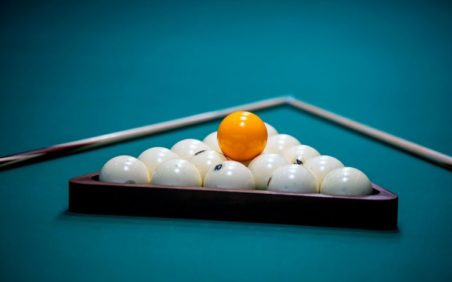
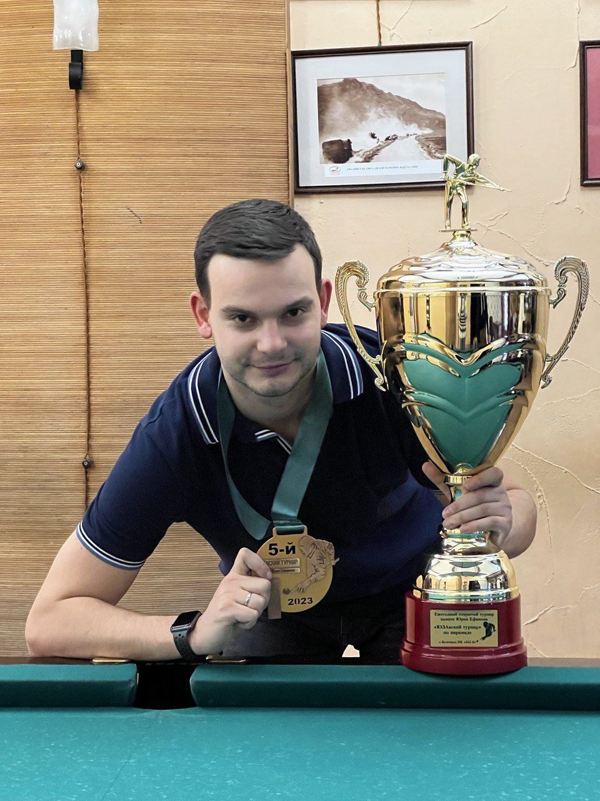
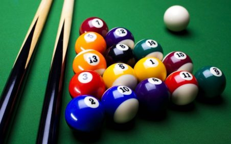
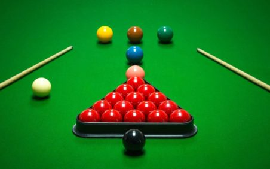
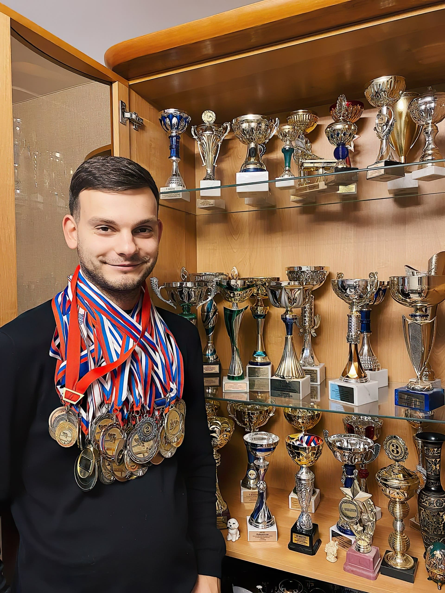
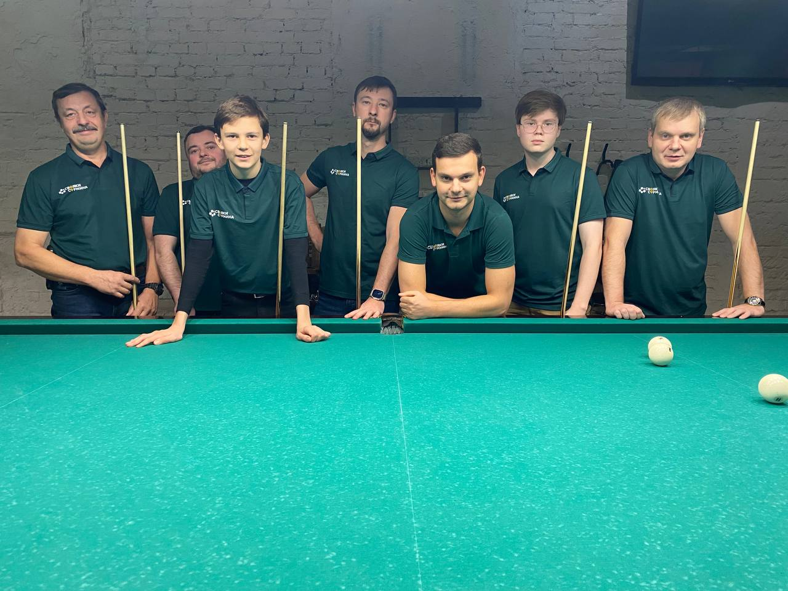

01 / ПИРАМИДА
Русский бильярд
Точность в каждом миллиметре. Крупные шары, узкие лузы и удовольствие от по-настоящему чистого удара.
Выбрать направлениеБИЛЬЯРД НАЧИНАЕТСЯ С ВАС
Научитесь чувствовать стол, владеть ударом и получать удовольствие от каждой партии.
Школа Ильи Сурмина. От первого удара
до уверенной игры — в вашем темпе.
Русский бильярд · Пул · Снукер

Основатель школы · Кандидат в мастера спорта
учеников школы
лет тренерского опыта
бильярдные дисциплины
клуб рядом с вами
01 — НАПРАВЛЕНИЯ
Три дисциплины. Один подход —
внимание к вам и вашей технике.

Точность в каждом миллиметре. Крупные шары, узкие лузы и удовольствие от по-настоящему чистого удара.
Выбрать направление
Динамика и тактика. Учитесь управлять битком, выстраивать серии и продумывать следующий ход.
Выбрать направление
Большой стол и тонкая игра. Развивайте концентрацию, точность позиционных ударов и стратегическое мышление.
Выбрать направление
ЛИЧНЫЙ ОПЫТ. ВАШ РЕЗУЛЬТАТ.02 — О ШКОЛЕ
«Бильярд — это не просто игра, а настоящая борьба с собой».
Меня зовут Илья Сурмин. Я основатель школы, дипломированный тренер и кандидат в мастера спорта. Играю с 2003 года и помогаю ученикам находить уверенность за столом.
Мы подбираем программу под ваш уровень и цели: спокойно осваиваем основы с новичками, исправляем технику любителей и разбираем сложные игровые ситуации.
Серебряный и бронзовый призёр Первенства России. Участник Первенств мира и Европы, входил в состав сборной России.
03 — ПРОГРАММА
Детям, начинающим и любителям.
Индивидуальный план вместо шаблона.
Правила игры, стойка, мост и механика удара. Разберём базовые технические элементы.
Прицеливание, сыгрывание шаров, контроль скорости и вращения. Учимся видеть позицию.
Тактические решения, игровые тренировки и разбор ключевых моментов каждой партии.
04 — СТОИМОСТЬ
Одинаковые цены для русского
бильярда, пула и снукера.
Внимание к технике и вашим целям.
Личный опыт основателя школы.
Аренда стола оплачивается отдельно по тарифу клуба. Стоимость парных занятий указана за двоих. Абонементы: 5 занятий — до 45 дней, 10 занятий — до 75 дней.
05 — КОМАНДА
Тренеры, которые замечают детали
и поддерживают ваш прогресс.

Русский бильярд · Пул
Более 8 лет тренерского опыта. Дипломированный тренер, основатель школы и многократный победитель московских соревнований.
Русский бильярд · Пул
Более 7 лет тренерского опыта. Обладатель Кубка Московской области, призёр командного Кубка Москвы. Психология, механика, тактика и этикет.
Русский бильярд · Пул
Более 3 лет тренерского опыта. Многократный призёр Первенства Москвы по пулу. Обучение с нуля, механика движений и устранение ошибок.
Вы тоже живёте бильярдом? Приглашаем опытных тренеров в команду школы.
Присоединиться к командеПОДАРОК С ХАРАКТЕРОМ
Сертификат на обучение или мастер-класс по бильярду — для друга, близкого человека или для вас двоих.
Заказать сертификат4 000 ₽час для одного
5 000 ₽час для двоих
Аренда стола включена
06 — ОТЗЫВЫ
Впечатления учеников школы.
Более 500 человек уже начали.
На первом уроке занимались стойкой и ударом. Уроки проходят так, что безусловно хочется прийти на занятие ещё!
Шары начали идти туда, куда целишься. Появилась новая волна интереса к игре. Тренер очень простым языком объясняет сложные вещи.
Большое спасибо Илье за профессионализм, пунктуальность, тактичность и очень интересное занятие! Поверила в себя и обязательно продолжу.
07 — ГДЕ ЗАНИМАЕМСЯ
Тренировки проходят в клубах по всей Москве. Подберём площадку, до которой вам удобно добираться.
Подобрать клубОСНОВНЫЕ ПЛОЩАДКИ РЯДОМ С МЕТРО
Точный клуб и время согласуем при записи.
08 — КВАЛИФИКАЦИЯ
Дипломы, награды и результаты
соревнований. Нажмите, чтобы рассмотреть.
09 — ВОПРОСЫ
Да. Обучение с нуля — одно из основных направлений школы. Тренер поможет разобраться в правилах, поставить стойку и освоить первые удары.
Школа рекомендует начинать с 6 лет при росте не ниже 145 см.
Для максимального результата рекомендуем минимум 2 раза в неделю. Можно заниматься и раз в неделю, но важно не пропускать занятия. Скорость прогресса зависит от индивидуальных особенностей и целей.
Единого срока нет: результат зависит от начального уровня, регулярности, желания и целеустремлённости ученика. План занятий тренер подбирает индивидуально.
На первом занятии можно воспользоваться кием в клубе или взять прокатный по тарифу клуба. Если решите приобрести свой, тренер поможет с выбором.
Да. Основные площадки находятся у метро Кутузовская, Нагорная, Новогиреево и Люблино. Также подберём клуб под ваше местоположение.
По уважительной причине можно договориться о переносе срока. Предупредите тренера заранее. Регулярные занятия важны для сохранения прогресса. Срок абонемента на 5 занятий — до 45 дней, на 10 — до 75 дней.
СДЕЛАЙТЕ ПЕРВЫЙ ХОД
Расскажите о своём опыте и удобном районе.
Подберём тренера, клуб и время занятия.
Редакция от 6 октября 2026 года
Политика описывает обработку информации при использовании сайта школы бильярда «Свояки Сурмина» и обращении в школу через указанные на сайте контакты. Контакт администрации по вопросам персональных данных: surmina.eliza@gmail.com, телефон +7 977 857-68-61.
В форме можно указать имя, выбранную дисциплину, уровень игры, интересующий формат занятия и текст обращения, в том числе удобный район. При самостоятельном обращении по телефону, электронной почте или через мессенджер школа также получает сведения, которые вы предоставляете в соответствующем канале: например, номер телефона, адрес электронной почты, имя профиля и содержание переписки. Не указывайте в сообщении сведения, которые не нужны для записи на занятие.
Форма составляет сообщение в вашем браузере. На сайте нет собственного сервера приёма заявок или базы обращений; текст формы не сохраняется кодом сайта в cookie или локальном хранилище браузера. До нажатия кнопки «Продолжить в WhatsApp» введённые сведения не передаются школой из этой формы.
При нажатии кнопки браузер переходит на внешний сервис WhatsApp по ссылке, содержащей подготовленный текст. В этот момент текст передаётся сервису WhatsApp и может сохраняться в истории браузера как часть адреса. Сообщение школе будет отправлено только после вашего подтверждения в WhatsApp. До отправки его можно изменить. Если вы не хотите передавать сведения этому сервису, свяжитесь со школой по телефону или электронной почте.
Предоставленные в обращении сведения используются для ответа на вопросы, подбора тренера, клуба и времени, согласования занятий, абонементов, сертификатов или других запрошенных услуг. Форма сайта не оформляет подписку на рекламные рассылки. Сам просмотр сайта не считается согласием на рекламу.
Сайт содержит ссылки на WhatsApp, Telegram, ВКонтакте, а также ссылки для звонка и отправки письма. После перехода обработка сведений соответствующим сервисом регулируется его собственной политикой. Эти сервисы могут обрабатывать данные за пределами вашей страны. Сайт не управляет их настройками, сроками хранения и правилами обработки.
При загрузке сайта браузер передаёт службе размещения техническую информацию, необходимую для соединения: IP-адрес, параметры браузера, адрес запрошенного ресурса и время запроса. Служба размещения может вести технические журналы и использовать собственные средства авторизации и защиты. В код этой версии сайта не добавлены рекламные пиксели, системы аналитики или собственные cookie. Фотографии размещены вместе с сайтом.
Сайт не создаёт отдельной базы персональных данных. Отправленные вами сообщения могут сохраняться в выбранном канале связи и в переписке администрации школы для работы с вашим обращением. Сведения не предназначены для публикации в открытом доступе. По вопросам хранения, доступа и удаления конкретного обращения свяжитесь с администрацией школы.
Вы можете запросить сведения об обработке предоставленной вами информации, исправление неточностей, удаление данных или прекращение использования контактов, написав на surmina.eliza@gmail.com. Укажите, с какого контакта вы обращались в школу и что требуется изменить. Для выполнения запроса может потребоваться подтверждение того, что обращение относится к вам. Вопросы удаления данных из самого мессенджера или социальной сети также адресуются оператору соответствующего сервиса.
При изменении способов записи, добавлении аналитики, серверного хранения заявок или других функций эта политика должна быть обновлена. Дата актуальной редакции указана в начале документа.